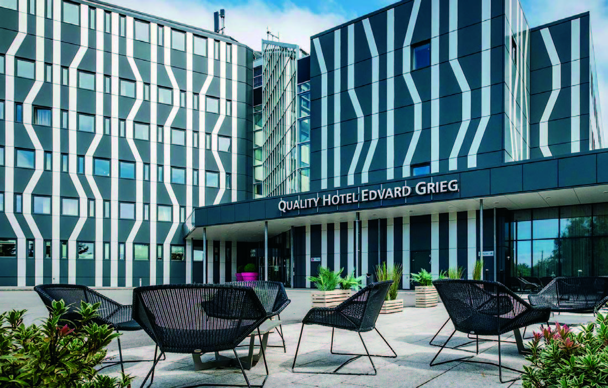

16.–18. oktober · Bergen
Kunnskap.
Samarbeid.
Nye perspektiver.
Velkommen til NNFs utdanningskonferanse 2026 på Hotel Edvard Grieg.
Se fredagens program
Fredag
Se programmet →
OKTOBER17Lørdag
Se programmet →
OKTOBER18Søndag
Se programmet →
Din guide gjennom konferansen
Finn dagens program, bli kjent med foredragene og send inn spørsmål til foredragsholderne.
Les om foredragene →